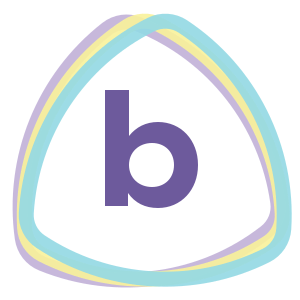

PrismaBoard – Πολιτική απορρήτου
Τελευταία ενημέρωση: 18 Οκτωβρίου 2026
Το PrismaBoard είναι διαδραστικός πίνακας για την τάξη που τρέχει ολόκληρος μέσα στον browser σας. Δεν έχει δικό του διακομιστή, δεν απαιτεί λογαριασμό και δεν συλλέγει στατιστικά χρήσης. Μετρά μόνο πάνω στη συσκευή σας πόσες φορές πατήθηκε κάθε κουμπί· οι μετρητές αυτοί δεν στέλνονται πουθενά και τους βλέπετε εσείς από το ☰ → Ρυθμίσεις και αρχεία… → Μετρητές χρήσης.
Τι αποθηκεύεται και πού
- Τα μαθήματα, τα πρότυπα σελίδων και οι ρυθμίσεις σας αποθηκεύονται μόνο στη συσκευή σας, στον αποθηκευτικό χώρο του browser. Δεν αποστέλλονται πουθενά.
- Αν τα σβήσετε από τον browser ή από την εφαρμογή, διαγράφονται οριστικά.
Google Drive (προαιρετικό)
- Μόνο όταν πατήσετε «Ανέβασμα στο Drive και QR», η εφαρμογή σας ζητά να συνδεθείτε στον λογαριασμό σας Google και ανεβάζει το PDF του μαθήματος σε φάκελο «PrismaBoard» στο δικό σας Drive.
- Η εφαρμογή ζητά μόνο το δικαίωμα
drive.file: βλέπει και διαχειρίζεται αποκλειστικά τα αρχεία που ανέβασε η ίδια. Δεν έχει πρόσβαση στα υπόλοιπα αρχεία σας. - Το αρχείο που ανεβαίνει γίνεται ορατό σε όποιον έχει τον σύνδεσμό του, ώστε να το ανοίγουν οι μαθητές. Μπορείτε να αλλάξετε ή να καταργήσετε την κοινή χρήση, ή να σβήσετε το αρχείο, από το Google Drive.
- Το QR οδηγεί τους μαθητές σε σελίδα του PrismaBoard που προβάλλει το αρχείο απευθείας από το Google Drive. Η σελίδα δεν συλλέγει και δεν αποθηκεύει τίποτα.
- Αν πατήσετε «Αποθήκευση στο Google Drive» ή «☁ Όλα στο Drive», τα μαθήματά σας ανεβαίνουν ως ιδιωτικά αρχεία στον φάκελο «PrismaBoard» του δικού σας Drive (με υποφάκελο για κάθε τμήμα). Αυτά δεν μοιράζονται με κανέναν. Το «Άνοιγμα από το Google Drive» διαβάζει μόνο αυτά τα αρχεία.
- Το διακριτικό πρόσβασης της Google μένει μόνο στη μνήμη της καρτέλας και χάνεται όταν την κλείσετε. Η εφαρμογή δεν αποθηκεύει ούτε μεταβιβάζει σε τρίτους δεδομένα του λογαριασμού σας Google.
- Μπορείτε να ανακαλέσετε την πρόσβαση οποτεδήποτε από τη σελίδα «Εφαρμογές τρίτων με πρόσβαση στον λογαριασμό» της Google.
Αναγνώριση γραφής (προαιρετικό)
Αν ορίσετε δικό σας κλειδί για υπηρεσία αναγνώρισης (Google Gemini ή Anthropic Claude) και πατήσετε «Αναγνώριση», η εικόνα του επιλεγμένου χειρόγραφου στέλνεται απευθείας από τον browser σας στην υπηρεσία που διαλέξατε, με το δικό σας κλειδί. Το κλειδί αποθηκεύεται μόνο στη συσκευή σας. Ισχύουν οι όροι της αντίστοιχης υπηρεσίας.
Αναφορά προβλήματος (προαιρετικό)
Μόνο όταν πατήσετε «Αναφορά» και μετά «Αποστολή», στέλνεται με email στον δημιουργό του PrismaBoard ό,τι γράψατε στο παράθυρο, μαζί με την έκδοση της εφαρμογής, τον τύπο του browser, το μέγεθος της οθόνης και τα τεχνικά στοιχεία του σφάλματος. Δεν στέλνονται τα μαθήματά σας ούτε στοιχεία λογαριασμού. Η αποστολή γίνεται μέσω της υπηρεσίας Google Apps Script. Οι αναφορές χρησιμοποιούνται μόνο για τη διόρθωση προβλημάτων και σβήνονται όταν δεν χρειάζονται πια.
Επικοινωνία
Για ερωτήσεις ή αιτήματα: σελίδα του έργου στο GitHub.
PrismaBoard – Privacy Policy
Last updated: 18 October 2026
PrismaBoard is a classroom whiteboard that runs entirely in your browser. It has no server of its own, requires no account and collects no analytics.
What is stored and where
- Your lessons, page templates and settings are stored only on your device, in the browser's storage. They are not sent anywhere.
- Deleting them from the browser or from the app removes them permanently.
Google Drive (optional)
- Only when you press “Upload to Drive and QR”, the app asks you to sign in to your Google account and uploads the lesson PDF to a “PrismaBoard” folder in your own Drive.
- The app requests only the
drive.filescope: it can see and manage only the files it created itself. It has no access to the rest of your files. - The uploaded file is shared with anyone who has its link, so that students can open it. You can change or remove sharing, or delete the file, in Google Drive.
- The QR code takes students to a PrismaBoard page that displays the file directly from Google Drive. That page collects and stores nothing.
- If you press “Save to Google Drive” or “All to Drive”, your lessons are uploaded as private files to the “PrismaBoard” folder of your own Drive (with a subfolder per class). These are not shared with anyone. “Open from Google Drive” reads only these files.
- The Google access token is kept only in the tab's memory and is lost when the tab closes. The app does not store Google user data and does not transfer it to third parties.
- You can revoke access at any time from Google's “Third-party apps with account access” page.
Handwriting recognition (optional)
If you set your own API key for a recognition service (Google Gemini or Anthropic Claude) and press “Recognise”, the image of the selected handwriting is sent directly from your browser to the service you chose, using your own key. The key is stored only on your device. That service's terms apply.
Problem reports (optional)
Only when you press “Report” and then “Send”, what you typed in the window is emailed to the PrismaBoard developer, together with the app version, browser type, screen size and the technical details of the error. Your lessons and account data are not sent. Reports are delivered through Google Apps Script, are used only to fix problems, and are deleted when no longer needed.
Contact
Questions or requests: project page on GitHub.